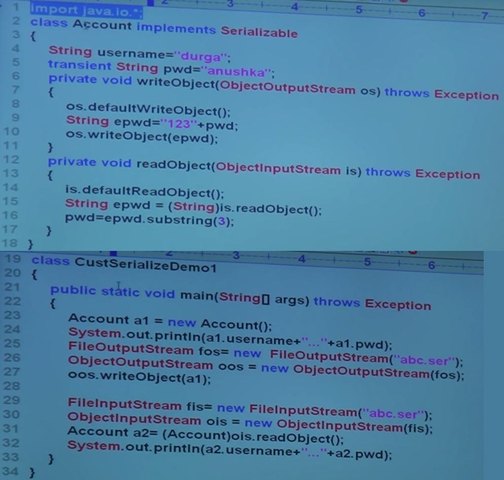

The process of saving the state of object to the file, This process is called Serialization. But Strictly speaking it is
The process of converting an object from "Java supported form" to "File supported form" or "Network supported form" this conversion process is called Serialization.
In Serialization we saves the data permantantly for future purpose. But while saving data there may be chance of sensitive/secure Data Information.
In Serialization, If you don't want to save the secured/Sensitive data Information (for security purpose) then such type of variables must be declared with transient Modifier.
The Serialization concept is applicable only for Object and not for Class.
The process of reading the state of an object from the file ("File supported form" or "Network supported form") is called de-serialization. But Strictly speaking it is
The process of converting object from "File supported form" or "Network supported form" To "Java supported form". this conversion process is called de-serialization.
How we can implementing the Serialization.
- Create "File output Stream"
- Crearte "Object output Stream"
- "Object output Stram " take the Object data and convert into binary data and "File output Stream" write the Binary data by using (writeObject() Method ) in to file. Then extension of file is (.ser)
How we can implementing the De-Serialization.
- If you want read the Binary data from File then "File output Stream" is required
- "File output Stream" reads the Binary data and "Object output Stream" reads data by using(readObject() Method ) and creates the object.
serialization is converting an object to stream of bytes.
de-serialization is rebuilding the object from stream of bytes.
Java Serialiation API provides the features to perform seralization & de-serialization. A class must implement java.io.Serializable interface to be eligible for serialization. class implements Serializable interface which means it can be serialized. All the fields of this class can be written to a file after being converted to stream of bytes, except those fields that are declared transient.
Example :
package edu.java.basic;
import java.io.Serializable;
public class Student implements Serializable{
private static final long serialVersionUID = 7173498740102156356L;
private int stuRollNum;
private int stuAge;
private String stuName;
private transient String stuAddress;
private transient int stuHeight;
public Student(int roll, int age, String name,String address, int height)
{
this.stuRollNum = roll;
this.stuAge = age;
this.stuName = name;
this.stuAddress = address;
this.stuHeight = height;
}
public int getStuRollNum() {
return stuRollNum;
}
public void setStuRollNum(int stuRollNum) {
this.stuRollNum = stuRollNum;
}
public int getStuAge() {
return stuAge;
}
public void setStuAge(int stuAge) {
this.stuAge = stuAge;
}
public String getStuName() {
return stuName;
}
public void setStuName(String stuName) {
this.stuName = stuName;
}
public String getStuAddress() {
return stuAddress;
}
public void setStuAddress(String stuAddress) {
this.stuAddress = stuAddress;
}
public int getStuHeight() {
return stuHeight;
}
public void setStuHeight(int stuHeight) {
this.stuHeight = stuHeight;
}
}
This class is writing an object of Student class to the Student.ser file. We are using FileOutputStream and ObjectOutputStream to write the object to File.
Note :- Note: As per the best practices of Java Serialization, the file name should have .ser extension.
Example : Serialzation example
package edu.java.basic;
import java.io.FileOutputStream;
import java.io.ObjectOutputStream;
import java.io.IOException;
public class SendClass
{
public static void main(String args[])
{
Student obj = new Student(101, 25, "Chaitanya", "Agra", 6);
try{
FileOutputStream fos = new FileOutputStream("Student.ser");
ObjectOutputStream oos = new ObjectOutputStream(fos);
oos.writeObject(obj);
oos.close();
fos.close();
System.out.println("Serialzation Done!!");
}catch(IOException ioe){
System.out.println(ioe);
}
}
}
Output: Serialzation Done!!
This class would rebuilt the object of Student class after reading the stream of bytes from the file. Observe the output of this class, student address and student height fields are having null & 0 values consecutively. This is because these fields were declared transient in the Student class.
Example : De-serialization example
package edu.java.basic;
import java.io.FileInputStream;
import java.io.ObjectInputStream;
import java.io.IOException;
public class AcceptClass {
public static void main(String args[])
{
Student o=null;
try{
FileInputStream fis = new FileInputStream("Student.ser");
ObjectInputStream ois = new ObjectInputStream(fis);
o = (Student)ois.readObject();
ois.close();
fis.close();
}
catch(IOException ioe)
{
ioe.printStackTrace();
return;
}catch(ClassNotFoundException cnfe)
{
System.out.println("Student Class is not found.");
cnfe.printStackTrace();
return;
}
System.out.println("Student Name:"+o.getStuName());
System.out.println("Student Age:"+o.getStuAge());
System.out.println("Student Roll No:"+o.getStuRollNum());
System.out.println("Student Address:"+o.getStuAddress());
System.out.println("Student Height:"+o.getStuHeight());
}
}
Student Name:Chaitanya
Student Age:25
Student Roll No:101
Student Address:null
Student Height:0
Serializable Interface
- Serializable Interface are present in java.io.Serializable Package
- Serializable Interface does not contain any methods, so it is also called Marked Interface
What is the role/use of Transient in Serializable
- Transient is Modifier and it is applicable only for variables.and not applicable for (methods & classes)
- In Serialization we saves the data permantantly for future purpose. But while saving data there may be chance of sensitive/secure Data Information.
In Serialization, If you don't want to save the secured/Sensitive data Information (for security purpose) then such type of variables must be declared with transient Modifier. - At the time of Serialization, JVM will check all the Transient variable and if found then JVM will ignore value of that transient variable and will save default value in the file.
- Transient means not to serialize.
If we declare a static variable as Transient
- static variables means Class LevelData.
- static variables are not part of Class Object. so it never saves in file while Serialization
- The Serialization concept is applicable only for Object and not for Class.
- There is no use to declare static variable as transient
If we declare a final variable as Transient
- Final variables means constant variables
- Final variables never going to change.
- At a compile time Every final variable will be replaced by value
- At a runtime , final variable not will be in variable form.
- There is no use to declare final variable as transient
What is Object Graph in Serialization.
- Whenever we serialize of Class object, the set of all objects, which are reachable from class object will be seriazable automatically.This group of object is nothing but Object Graph in Serialization.
Customized Serialization
In the normal/default Serialization, every thing take care by JVM. some time we may not satisfy with normal/default serialization, then we can go for customized serialization.
What is the need of Customized Serialization
What is the need of customized Serialization
To recover loss of information because of transient variable.
Serialization with Respect to Inheritance
-
CASE 1 : -in inheritance , Parent class implements serialization but child class not implements serialization.
- seralizable nature in inheritance is from parent class to child class
- If the Parent class implements serialization then by default automatically child class implements serialization.
-
CASE 2 : -in inheritance , Parent class not implements serialization but child class implements serialization.
- To serialize child class object Parent class need not to be seralizable, even though parent class doesn't implement Serialization, happlily we can serialize the child class.
- To serialize the child class object Parent class need not to be seralizable
- At the time of Serialization, JVM will check is any instance varible inheriting from non-seralizable parent class, then JVM ignores the orignal/updated values. and set the default values.
- At the time of De-Serialization,JVM will check is any parent class is non-seralizable or not. if any parent class is non-seralizable then JVM will execute instance control flow in every non-seralizable parent class and shares it's instance variable's values to the current object.
What is instance control flow
- it is identification of instance members
- it is a execution of instance variable assignments and instance blocks
- it is a execution of constructor, that means JVM will always called no argument constructor from non-seralizable parent class, so every non-seralizable parent class have no argument constructor. If no argument constructor nont found in non-seralizable parent class then we will get runtime exeception InvalidClassException

SOME IMPORTANT ABOUT SERIALIZATION
In Serialization, Every thing take care by JVM and programmers does not have any control
In Serialization, always save all object in file and it is not possible to save selected part/properties/variables of the object. so it create impacts on performance.
- If you want to save toal properties of object in file , then you go for Serialization
- seralizable interface does not have any method , so it is called Marker interface
To overcome this problem , we go for Externalization concept.
- Externalizable interface is child interface of seralizable interface
What is the advantage of EXternalization
- In Externalization, Every thing take care by programmer and JVM does not have any control
- In Externalization, We can save total properties/variable or selected part/properties/variables of the object in file. so it increase the performance.
- If you want to save selected properties of object in file , then you go for Externalization
- To provide Externalization in java , we should implement Externalizable interface
- In Externalization, at the time of De-Serialization, a JVM will create a seperate (properties/variables) which are not taken while Serialization.
- JVM will always called no argument constructor from Externalizable implemented class, so every Externalizable implemented class have no argument constructor. If no argument constructor nont found in Externalizable implemented class then we will get runtime exeception InvalidClassException
- Externalizable interface have two methods
writeExternal(ObjectOutput out) throws IoException
- writeExternal will be executed automatically at the time of Serialization
- In writeExternal method , we write the code to save required properties/variables in the file.
readExternal(ObjectInput in) throws IoException, ClassNotFoundException
- readExternal will be executed automatically at the time of De-Serialization
- In readExternal method , we wrie the code to read required properties/variables from the file and assign it to current object.
seralizable and Externalizable interfaces are introduced in java 1.1 version
SerialVersionUID in Serialization
- In Serialization and De-Serialization , sender and receiver need not be same,locaction may be different, persons may be different, operating systems may be difference.
- While Serialization Sender side JVM will create the Unique Id and at the time of De-Serialization , Receiver side JVM will check that Unique Id in it's Local class, if (Sender side Unique ID an Receiver side Unique ID) both are matched then De-Serialization process will be completed. if Both Unique ID mis-matched then we will get runtime exeception InvalidClassException at Receiver side.
- This Unique ID saved in object is nothing but SerialVersionUID.
Every object, at the time of Serialization Sender side JVM will save one Unique ID.This Unique ID is nothing but SerialVersionUID. Receiver side JVM will use this Unique ID to verify the Object is correct or not.
Problems of depending on default SerialVersionUID generated by JVM.
- If we are depending on default SerialVersionUID generated by JVM, then Both (Sender and Receiver) should use same JVM versions, same .class file versions. and there may be chance of performance problem because internally JVM use complex alogirithm to generate SerialVersionUID.
- To overcome this problem. we have to generate SerialVersionUID.